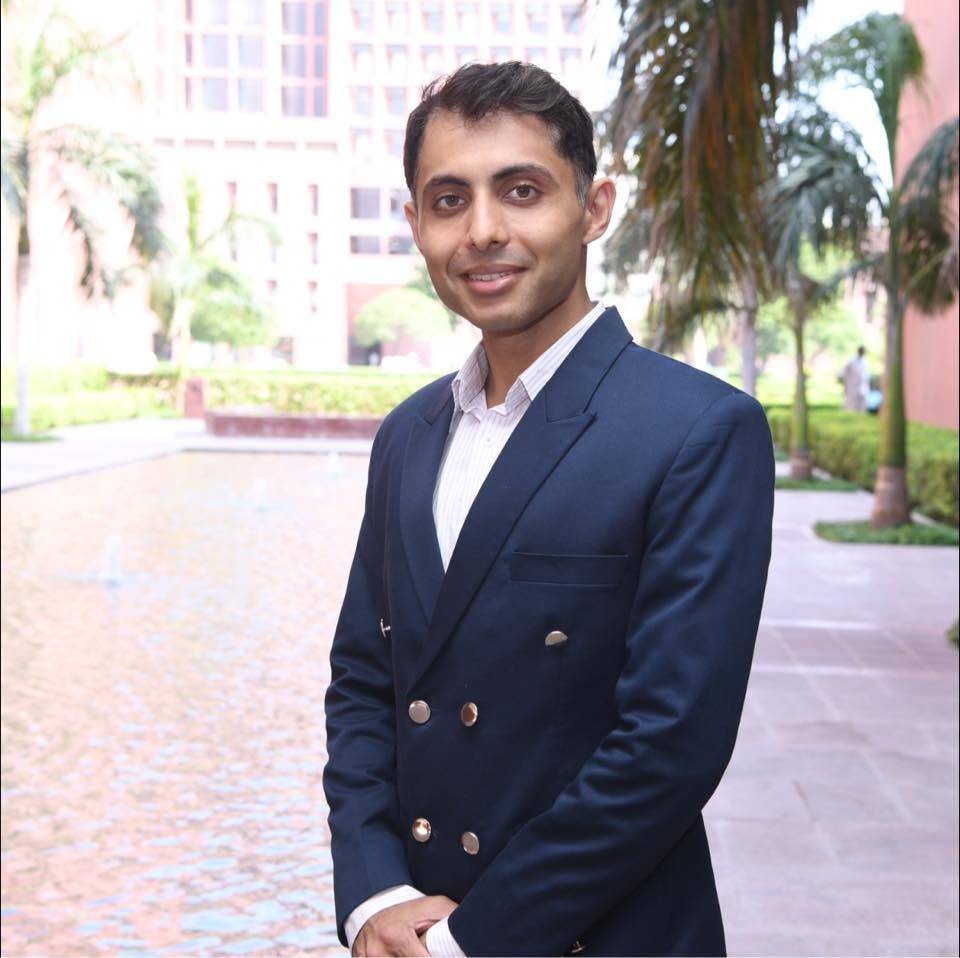

Geospatial Data Scientist and Researcher with 8+ years of industry experience applying AI, computer vision, and remote sensing techniques to transportation and urban analytics. Developed MobilAI, an AI-powered platform for road safety analysis from UAV footage. Leading research within an emerging aerial-ground collective perception initiative at IMOB that combines UAV sensing, intelligent transportation systems, and social robotics for safer urban mobility.
EU Drone Pilot Certificate (A1/A3)
Belgian Civil Aviation Authority
Issued: March 2025